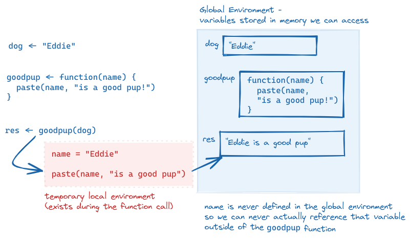
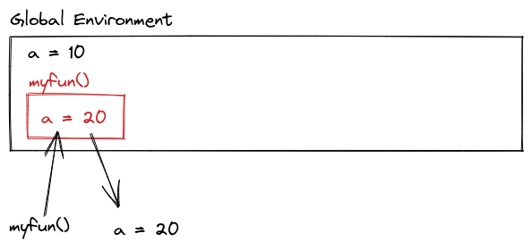
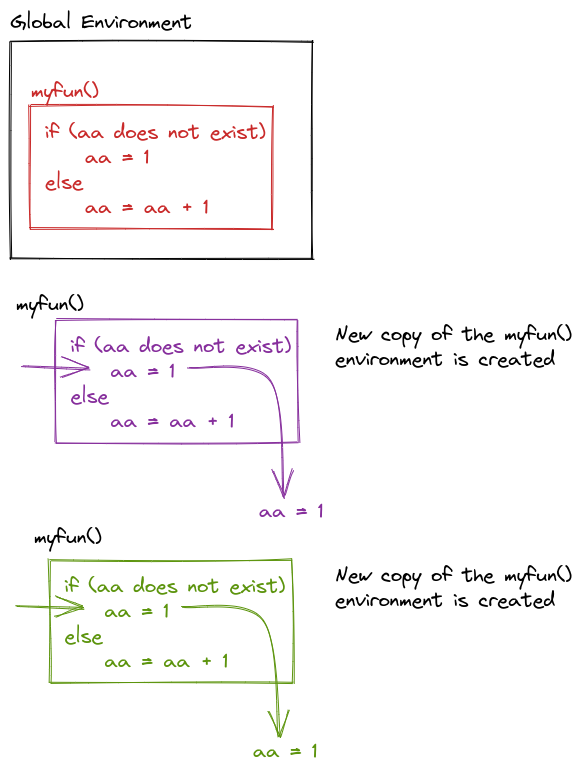
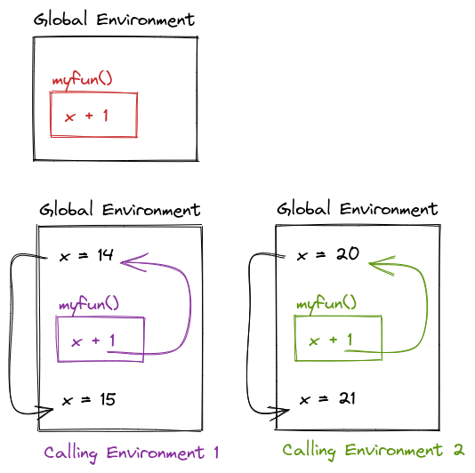

df <- tibble::tibble(
a = rnorm(10),
b = rnorm(10),
c = rnorm(10),
d = rnorm(10)
)
df$a <- (df$a - min(df$a, na.rm = TRUE)) /
(max(df$a, na.rm = TRUE) - min(df$a, na.rm = TRUE))
df$b <- (df$b - min(df$b, na.rm = TRUE)) /
(max(df$b, na.rm = TRUE) - min(df$a, na.rm = TRUE))
df$c <- (df$c - min(df$c, na.rm = TRUE)) /
(max(df$c, na.rm = TRUE) - min(df$c, na.rm = TRUE))
df$d <- (df$d - min(df$d, na.rm = TRUE)) /
(max(df$d, na.rm = TRUE) - min(df$d, na.rm = TRUE))13 Writing Functions
A function is a set of actions that we group together and name. Throughout this course, you’ve used a bunch of different functions in R and python that are built into the language or added through packages: mean, ggplot, length, print. In this chapter, we’ll be writing our own functions.
13.1 Objectives
- Identify the parts of a function from provided source code
- Predict what the function will return when provided with input values and source code
- Given a task, lay out the steps necessary to complete the task in pseudocode
- Write a function which uses necessary input values to complete a task
13.2 When to write a function?
If you’ve written the same code (with a few minor changes, like variable names) more than twice, you should probably write a function instead. There are a few benefits to this rule:
Your code stays neater (and shorter), so it is easier to read, understand, and maintain.
If you need to fix the code because of errors, you only have to do it in one place.
You can re-use code in other files by keeping functions you need regularly in a file (or if you’re really awesome, in your own package!)
If you name your functions well, your code becomes easier to understand thanks to grouping a set of actions under a descriptive function name.
Learn more about functions
Example: Turning Code into Functions
This example is modified from R for Data Science [2, Ch. 19].
What does this code do? Does it work as intended?
import pandas as pd
import numpy as np
df = pd.DataFrame({
'a': np.random.randn(10),
'b': np.random.randn(10),
'c': np.random.randn(10),
'd': np.random.randn(10)})
df.a = (df.a - min(df.a))/(max(df.a) - min(df.a))
df.b = (df.b - min(df.b))/(max(df.b) - min(df.a))
df.c = (df.c - min(df.c))/(max(df.c) - min(df.c))
df.d = (df.d - min(df.d))/(max(df.d) - min(df.d))The code rescales a set of variables to have a range from 0 to 1. But, because of the copy-pasting, the code’s author made a mistake and forgot to change an a to b.
Writing a function to rescale a variable would prevent this type of copy-paste error.
To write a function, we first analyze the code to determine how many inputs it has:
To convert the code into a function, we start by rewriting it using general names:
In this case, it might help to replace df$a with x.
In this case, it might help to replace df.a with x.
x = df.a
(x - min(x))/(max(x) - min(x))
## 0 0.123752
## 1 0.308678
## 2 0.952851
## 3 0.000000
## 4 0.687800
## 5 0.030097
## 6 0.372009
## 7 0.000352
## 8 1.000000
## 9 0.671303
## Name: a, dtype: float64Then, we make it a bit easier to read, removing duplicate computations if possible (for instance, computing min two times).
In R, we can use the range function, which computes the maximum and minimum at the same time and returns the result as c(min, max)
rng <- range(x, na.rm = T)
(x - rng[1])/(rng[2] - rng[1])
## [1] 0.9584487 0.6858824 0.5358416 0.2138378 1.0000000 0.0000000 0.8633534
## [8] 0.3750205 0.9543049 0.8796891In python, range is the equivalent of seq() in R, so we are better off just using min and max.
x = df.a
xmin, xmax = [x.min(), x.max()]
(x - xmin)/(xmax - xmin)
## 0 0.123752
## 1 0.308678
## 2 0.952851
## 3 0.000000
## 4 0.687800
## 5 0.030097
## 6 0.372009
## 7 0.000352
## 8 1.000000
## 9 0.671303
## Name: a, dtype: float64Finally, we turn this code into a function:
rescale01 <- function(x) {
rng <- range(x, na.rm = T)
(x - rng[1])/(rng[2] - rng[1])
}
rescale01(df$a)
## [1] 0.9584487 0.6858824 0.5358416 0.2138378 1.0000000 0.0000000 0.8633534
## [8] 0.3750205 0.9543049 0.8796891- The name of the function,
rescale01, describes what the function does - it rescales the data to between 0 and 1. - The function takes one argument, named
x; any references to this value within the function will usexas the name. This allows us to use the function ondf$a,df$b,df$c, and so on, withxas a placeholder name for the data we’re working on at the moment. - The code that actually does what your function is supposed to do goes in the body of the function, between
{and}(this is true in R, in python, there are different conventions, but the same principle applies) - The function returns the last value computed: in this case,
(x - rng[1])/(rng[2]-rng[1]). You can make this explicit by adding areturn()statement around that calculation.
def rescale01(x):
xmin, xmax = [x.min(), x.max()]
return (x - xmin)/(xmax - xmin)
rescale01(df.a)
## 0 0.123752
## 1 0.308678
## 2 0.952851
## 3 0.000000
## 4 0.687800
## 5 0.030097
## 6 0.372009
## 7 0.000352
## 8 1.000000
## 9 0.671303
## Name: a, dtype: float64The name of the function,
rescale01, describes what the function does - it rescales the data to between 0 and 1.The function takes one argument, named
x; any references to this value within the function will usexas the name. This allows us to use the function ondf.a,df.b,df.c, and so on, withxas a placeholder name for the data we’re working on at the moment.The code that actually does what your function is supposed to do goes in the body of the function, indented relative to the line with
def: function_name():. At the end of the function, you should have a blank line with no spaces or tabs.The function returns the value it is told to
return: in this case,(x - xmin)/(xmax - xmin). In Python, you mustreturna value if you want the function to perform a computation. 1
The process for creating a function is important: first, you figure out how to do the thing you want to do. Then, you simplify the code as much as possible. Only at the end of that process do you create an actual function.
13.3 Syntax

In R, functions are defined as other variables, using <-, but we specify the arguments a function takes by using the function() statement. The contents of the function are contained within { and }. If the function returns a value, a return() statement can be used; alternately, if there is no return statement, the last computation in the function will be returned.
In python, functions are defined using the def command, with the function name, parentheses, and the function arguments to follow. The first line of the function definition ends with a :, and all subsequent lines of the function are indented (this is how python knows where the end of the function is). A python function return statement is return <value>, with no parentheses needed.
Note that in python, the return statement is not optional. It is not uncommon to have python functions that don’t return anything; in R, this is a bit less common, for reasons we won’t get into here.
13.4 Arguments and Parameters
An argument is the name for the object you pass into a function.
A parameter is the name for the object once it is inside the function (or the name of the thing as defined in the function).
Example: Parts of a Function
Let’s examine the difference between arguments and parameters by writing a function that takes a dog’s name and returns “
dog <- "Eddie"
goodpup <- function(name) {
paste(name, "is a good pup!")
}
goodpup(dog)
## [1] "Eddie is a good pup!"dog = "Eddie"
def goodpup(name):
return name + " is a good pup!"
goodpup(dog)
## 'Eddie is a good pup!'In this example function, when we call goodpup(dog), dog is the argument. name is the parameter.
What is happening inside the computer’s memory as goodpup runs?

goodpup, showing that name is only defined within the local environment that is created while goodpup is running. We can never access name in our global environment.This is why the distinction between arguments and parameters matters. Parameters are only accessible while inside of the function - and in that local environment, we need to call the object by the parameter name, not the name we use outside the function (the argument name).
We can even call a function with an argument that isn’t defined outside of the function call: goodpup("Tesla") produces “Tesla is a good pup!”. Here, I do not have a variable storing the string “Tesla”, but I can make the function run anyways. So “Tesla” here is an argument to goodpup but it is not a variable in my environment.
This is a confusing set of concepts and it’s ok if you only just sort of get what I’m trying to explain here. Hopefully it will become more clear as you write more code.
Try it out: Function Parts
For each of the following blocks of code, identify the function name, function arguments, parameter names, and return statements. When the function is called, see if you can predict what the output will be. Also determine whether the function output is stored in memory or just printed to the command line.
def hello_world():
print("Hello World")hello_world()- Function name:
hello_world - Function parameters: none
- Function arguments: none
- Function output:
hello_world()
## Hello World- Function output is not stored in memory and is printed to the command line.
set.seed(3420523)
x = my_mean(1:10)
x- Function name:
my_mean - Function parameters: x
- Function arguments: 1:10
- Function output: (varies each time the function is run unless you set the seed)
set.seed(3420523)
x = my_mean(1:10)
x
## [1] 6- Function output is saved to memory (
x) and printed to the command line
13.4.1 Named Arguments and Parameter Order
In the examples above, you didn’t have to worry about what order parameters were passed into the function, because there were 0 and 1 parameters, respectively. But what happens when we have a function with multiple parameters?
divide <- function(x, y) {
x / y
}
def divide(x, y):
return x / yIn this function, the order of the parameters matters! divide(3, 6) does not produce the same result as divide(6, 3). As you might imagine, this can quickly get confusing as the number of parameters in the function increases.
In this case, it can be simpler to use the parameter names when you pass in arguments.
divide(3, 6)
## [1] 0.5
divide(x = 3, y = 6)
## [1] 0.5
divide(y = 6, x = 3)
## [1] 0.5
divide(6, 3)
## [1] 2
divide(x = 6, y = 3)
## [1] 2
divide(y = 3, x = 6)
## [1] 2divide(3, 6)
## 0.5
divide(x = 3, y = 6)
## 0.5
divide(y = 6, x = 3)
## 0.5
divide(6, 3)
## 2.0
divide(x = 6, y = 3)
## 2.0
divide(y = 3, x = 6)
## 2.0As you can see, the order of the arguments doesn’t much matter, as long as you use named arguments, but if you don’t name your arguments, the order very much matters.
13.4.2 Input Validation
When you write a function, you often assume that your parameters will be of a certain type. But you can’t guarantee that the person using your function knows that they need a certain type of input. In these cases, it’s best to validate your function input.
Input Validation Example
In R, you can use stopifnot() to check for certain essential conditions. If you want to provide a more illuminating error message, you can check your conditions using if() and then use stop("better error message") in the body of the if statement.
add <- function(x, y) {
x + y
}
add("tmp", 3)
## Error in x + y: non-numeric argument to binary operator
add <- function(x, y) {
stopifnot(is.numeric(x))
stopifnot(is.numeric(y))
x + y
}
add("tmp", 3)
## Error in add("tmp", 3): is.numeric(x) is not TRUE
add(3, 4)
## [1] 7In Python, the easiest way to handle errors is to use a try statement, which operates rather like an if statement: if the statement executes, then we’re good to go; if not, we can use except to handle different types of errors. The else clause is there to handle anything that needs to happen if the statement in the try clause executes without any errors.
def add(x, y):
x + y
add("tmp", 3)
## can only concatenate str (not "int") to str
def add(x, y):
try:
return x + y
except TypeError:
print("x and y must be add-able")
else:
# We should never get here, because the try clause has a return statement
print("Else clause?")
return
add("tmp", 3)
## x and y must be add-able
add(3, 4)
## 7You can read more about error handling in Python here
Input validation is one aspect of defensive programming - programming in such a way that you try to ensure that your programs don’t error out due to unexpected bugs by anticipating ways your programs might be misunderstood or misused [3].
13.5 Scope
When talking about functions, for the first time we start to confront a critical concept in programming, which is scope. Scope is the part of the program where the name you’ve given a variable is valid - that is, where you can use a variable.
A variable is only available from inside the region it is created.
What do I mean by the part of a program? The lexical scope is the portion of the code (the set of lines of code) where the name is valid.
The concept of scope is best demonstrated through a series of examples, so in the rest of this section, I’ll show you some examples of how scope works and the concepts that help you figure out what “scope” actually means in practice.
13.5.1 Name Masking
Scope is most clearly demonstrated when we use the same variable name inside and outside a function. Note that this is 1) bad programming practice, and 2) fairly easily avoided if you can make your names even slightly more creative than a, b, and so on. But, for the purposes of demonstration, I hope you’ll forgive my lack of creativity in this area so that you can see how name masking works.
Caution
What does this function return, 10 or 20?
a = 10
myfun = function() {
a = 20
return a
}
myfun()
myfun(). Because a=20 inside myfun(), when we call myfun(), we get the value of a within that environment, instead of within the global environment.a <- 10
myfun <- function() {
a <- 20
a
}
myfun()
## [1] 20
a = 10
def myfun():
a = 20
return a
myfun()
## 20The lexical scope of the function is the area that is between the braces (in R) or the indented region (in python). Outside the function, a has the value of 10, but inside the function, a has the value of 20. So when we call myfun(), we get 20, because the scope of myfun is the local context where a is evaluated, and the value of a in that environment dominates.
This is an example of name masking, where names defined inside of a function mask names defined outside of a function.
13.5.2 Environments and Scope
Another principle of scoping is that if you call a function and then call the same function again, the function’s environment is re-created each time. Each function call is unrelated to the next function call when the function is defined using local variables.
Caution
myfun = function() {
if a is not defined
a = 1
else
a = a + 1
}
myfun()
myfun()
What does this output?

myfun() is called, that template is used to create a new environment. This prevents successive calls to myfun() from affecting each other – which means a = 1 every time.def myfun():
try: aa
except NameError: aa = 1
else: aa = aa + 1
return aa
myfun()
## 1
myfun()
## 1Note that the try command here is used to handle the case where a doesn’t exist. If there is a NameError (which will happen if aa is not defined) then we define aa = 1, if there is not a NameError, then aa = aa + 1.
This is necessary because Python does not have a built-in way to test if a variable exists before it is used [4], Ch 17.
13.5.3 Dynamic Lookup
Scoping determines where to look for values – when, however, is determined by the sequence of steps in the code. When a function is called, the calling environment (the global environment or set of environments at the time the function is called) determines what values are used.
If an object doesn’t exist in the function’s environment, the global environment will be searched next; if there is no object in the global environment, the program will error out. This behavior, combined with changes in the calling environment over time, can mean that the output of a function can change based on objects outside of the function.
Caution
myfun = function() x + 1
x = 14
myfun()
x = 20
myfun()
What will the output be of this code?

myfun <- function() {
x + 1
}
x <- 14
myfun()
## [1] 15
x <- 20
myfun()
## [1] 21
def myfun():
return x + 1
x = 14
myfun()
## 15
x = 20
myfun()
## 21
Try It Out: Function Scope
What does the following function return? Make a prediction, then run the code yourself. From [2, Ch. 6]
f <- function(x) {
f <- function(x) {
f <- function() {
x ^ 2
}
f() + 1
}
f(x) * 2
}
f(10)f <- function(x) {
f <- function(x) {
f <- function() {
x ^ 2
}
f() + 1
}
f(x) * 2
}
f(10)
## [1] 202def f(x):
def f(x):
def f():
return x ** 2
return f() + 1
return f(x) * 2
f(10)def f(x):
def f(x):
def f():
return x ** 2
return f() + 1
return f(x) * 2
f(10)
## 20213.6 References
[1]
G. Grolemund and H. Wickham, R for Data Science, 1st ed. O’Reilly Media, 2017 [Online]. Available: https://r4ds.had.co.nz/. [Accessed: May 09, 2022]
[2]
H. Wickham, Advanced R, 2nd ed. CRC Press, 2019 [Online]. Available: http://adv-r.had.co.nz/. [Accessed: May 09, 2022]
[3]
Wikipedia Contributors, “Defensive programming,” Wikipedia. Wikimedia Foundation, Apr. 2022 [Online]. Available: https://en.wikipedia.org/w/index.php?title=Defensive_programming&oldid=1084121123. [Accessed: May 31, 2022]
[4]
A. Martelli and D. Ascher, Python Cookbook. O’Reilly Media, 2002 [Online]. Available: https://learning.oreilly.com/library/view/python-cookbook/0596001673/ch05s24.html. [Accessed: May 31, 2022]
This is not strictly true, you can of course use pass-by-reference, but we will not be covering that in this class as we are strictly dealing with the bare minimum of learning how to write a function here.↩︎